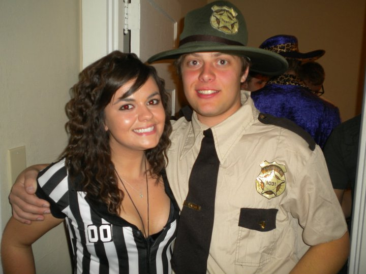

Andrew Williams' Homepage
Facebook: Andrew Williams
Twitter: @Dixxoncider_AJW
Resume
Me at a halloween party.

Me playing around with my turntables.
I am technically a senior at the University of Iowa working towards a major in Management Information systems and a minor in Computer Science.I say "technically" a senior because I am only in my third year here at the University but have 93 credits making me a senior. I plan on graduating a semester early in the fall of 2013. I recently accepted a internship at Transamerica (an Aegon Company) doing business tech support. I am an avid Hawkeye fan and am a season ticket holder to football and basketball. I also like all professional teams from St. Louis: Rams for NFL, Cardinals of MLB, and Blues for NHL. I don't follow NBA too closely but if I had to chose a favorite team it would the Chicago Bulls. In my free time I like to just hang out with my friends and girlfriend. I listen to a lot of music and attend a lot of music shows and festivals. I also watch a lot of TV and movies and when I have time like to read as well. Here is some of my favorite music, movies, and TV shows.